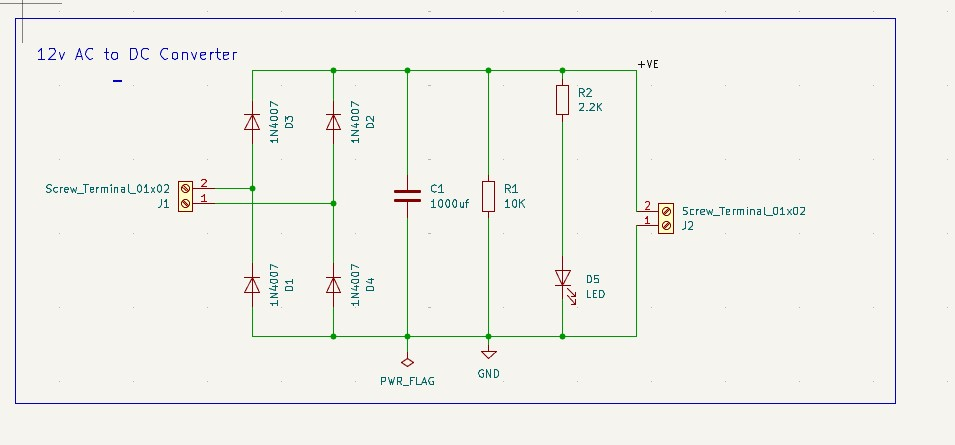
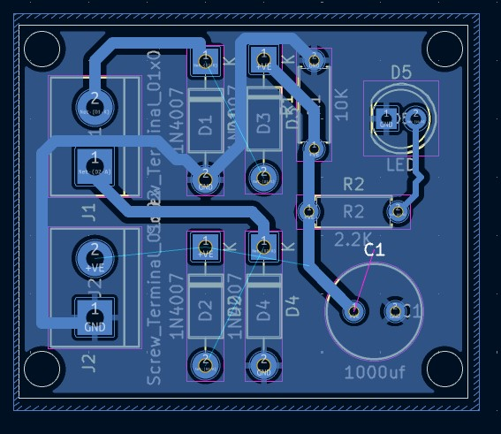
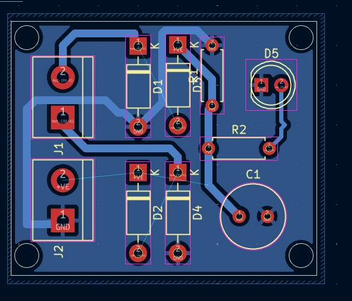
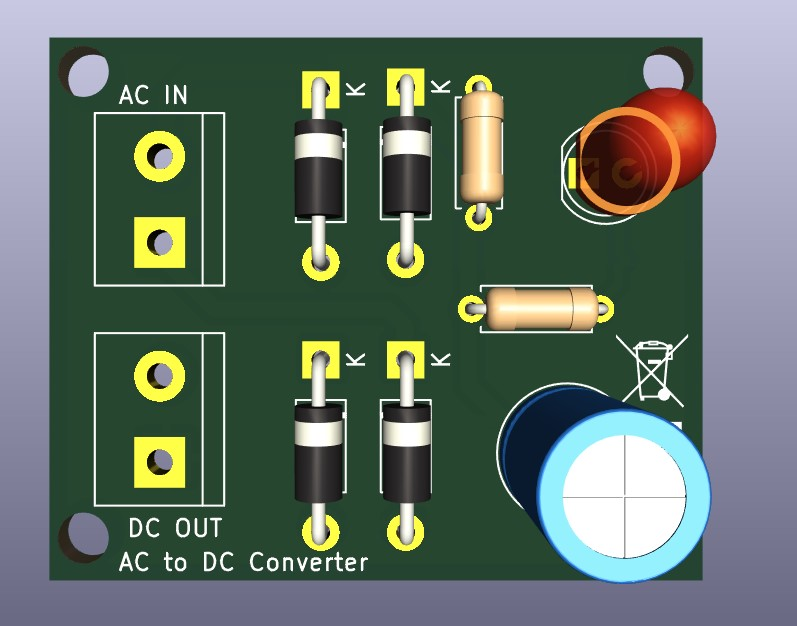
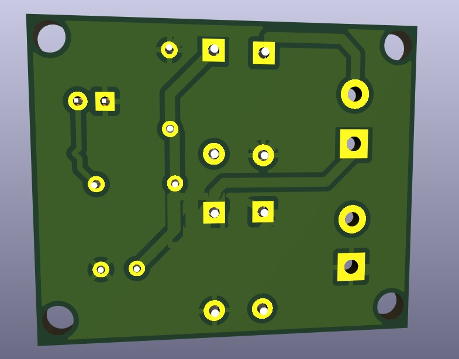

Build, layout and hardware evidence.
The supplied project images are shown as a complete design sequence so a recruiter can inspect the circuit concept, board layout and resulting 3D representation.
Every image supplied for this project is included below. Click an image to inspect it at full size.




